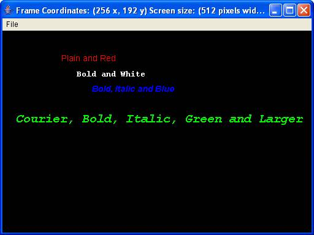

This is a favorite or second favorite subject in any programming language for most developers, Multimedia, the favorite is Graphics. Yes, there is a difference. This weeks discussion will deal with four areas of multimedia. 1) Text, Fonts and Colors 2) Basic Graphics 3) Sound 4) Animation We will be using the standard classes from the developers kit. Remember this is not an extensive set of classes. If you wish to go beyond the basics there are Java2D, Java3D, Sound Application Programming Interfaces (APIs) then enhance both performance and quality of the application. There are several other tools out there that the developer should be aware of when writing multimedia applications.
Text,
Fonts and Colors
We will now discuss how you can make your text
look better with fonts and colors using simple Object-Oriented
calls. Figure 1, TextFontColor.java uses the three methods
drawString
(java.lang.String), setFont (java.awt.Font) and setColor
(java.awt.Color). These method calls are
obvious and are easily set so that you can produce graphical output.
Lines 1 through 3 show the fontName, fontStyle and fontSize are
being set as defaults when the class is first initialized. In our
case we will have a default font of Arial, Plain and size 14.
Remember this is only the attributes not the actual font.
Line 4 shows that we are creating a font object that uses the name,
style and size that we have defined initially. Line 5 sets the
Graphics Context to the font that we defined in Line 4. Line 6
sets the Graphics Context pen color to RED. Line 7 writes the
string "Plain and Red" at
location 100 x and 100 y pixels within the Frame.
Lines 8 through 11 repeats the process, resetting the font
parameters except the fontStyle which has been changed to
Font.BOLD. Line 9 sets the font, Line 10 sets the color to WHITE
and Line 11 writes the string "Bold
and White" at location 125, 125.
The remaining lines 12 through 19 produce additional examples of
color, locations and fonts. Line 20 sets the background of the
Graphics Context to BLACK.
| import java.awt.Color; import java.awt.Font; import java.awt.Graphics; public class TextFontColor extends FrameExample { 1 private String fontName = "Arial"; 2 private int fontStyle = Font.PLAIN; 3 private int fontSize = 14; public TextFontColor() { super(); } public void paint(Graphics graphics) { Font font; // set font to class defaults and color to RED 4 font = new Font(fontName, fontStyle, fontSize); 5 graphics.setFont(font); 6 graphics.setColor(Color.RED); 7 graphics.drawString("Plain and Red", 100, 100); // set font to BOLD and color to WHITE 8 font = new Font(fontName, Font.BOLD, fontSize); 9 graphics.setFont(font); 10 graphics.setColor(Color.WHITE); 11 graphics.drawString("Bold and White", 125, 125); // set font to BOLD and ITALIC, color to BLUE 12 font = new Font(fontName, Font.BOLD + Font.ITALIC, fontSize); 13 graphics.setFont(font); // could implement graphics.setColor(Color.BLUE); 14 graphics.setColor(new Color(0, 0, 255)); 15 graphics.drawString("Bold, Italic and Blue", 150, 150); // set font to Courier, BOLD, ITALIC, color to GREEN and Larger 16 font = new Font("Courier", Font.BOLD + Font.ITALIC, 20); 17 graphics.setFont(font); 18 graphics.setColor(new Color(0, 255, 0)); 19 graphics.drawString( "Courier, Bold, Italic, Green and Larger", 25, 200); } public static void main(String[] args) { TextFontColor textFontColor = new TextFontColor(); 20 textFontColor.setBackground(Color.BLACK); } } |
| Figure
1 - TextFontColor.java |
Output of TextFontColor is shown in Figure 2.
|  |
| Figure 2 - Output of
TextFontColor |
Now that we have an example of how to draw graphics with particular
text, fonts and colors we can add more features, e.g. drawing shapes,
filling colors, etc.
Figure 3 is an example of drawing and filling shapes. Drawing
lines, circles, rectangles or any shape is relatively easy in
Java. Just call the correct method
or constructor and you can write basic graphics. Our example
draws a pair of dice that add up to the number 7.
Figure 3 line 1 set the Graphic Context pen color to RED. Line
2 draws a rounded rectangle at coordinates 100, 100. The other
parameters set up the width and height of the rounded rectangle.
This is actually our first die. Line 3 changes the Graphic
Context pen color to GREEN. Lines 4 through 6 draw filled ovals
at the locations as the first two parameters and the size the last two
parameters. Lines 1 though six draw the first die with the number
3. The next section draws the second die with the value of 4.
| import java.awt.Color; import java.awt.Graphics; public class DrawingFilling extends FrameExample { public DrawingFilling() { super(); } public void paint(Graphics graphics) { // first die - number 3 1 graphics.setColor(Color.RED); 2 graphics.drawRoundRect(100, 100, 150, 150, 25, 25); 3 graphics.setColor(Color.GREEN); 4 graphics.fillOval(130, 130, 25, 25); 5 graphics.fillOval(165, 165, 25, 25); 6 graphics.fillOval(200, 200, 25, 25); // second die - number 4 graphics.setColor(Color.RED); graphics.drawRoundRect(270, 100, 150, 150, 25, 25); graphics.setColor(Color.GREEN); graphics.fillOval(300, 130, 25, 25); graphics.fillOval(300, 200, 25, 25); graphics.fillOval(370, 130, 25, 25); graphics.fillOval(370, 200, 25, 25); } public static void main(String[] args) { DrawingFilling drawingFilling = new DrawingFilling(); drawingFilling.setBackground(Color.DARK_GRAY); } } |
| Figure 3 - DrawingFilling.java |
| Figure 4 - Output of DrawingFilling |
Images
Including images is a three step procedure. First you must define the location of the image, using the Toolkit.getDefaultToolkit().getIMage(filename); command. This command returns an image object.
Once the image object has been set, the image is set to the location on the frame, in our case translated to 50 x and 150 y. You can also scale, rotate or shear an image by calling any of the methods that are part of the Graphics class. Once the image has been set for drawing you can draw the image using the drawImage method.
| import java.awt.Color; import java.awt.Graphics; import java.awt.Image; import java.awt.Toolkit; import cv64.swing.FrameExample; public class Images extends FrameExample { public Images() { super(); } public Image getImage() { return Toolkit.getDefaultToolkit().getImage("max.jpg"); } public void paint(Graphics graphics) { graphics.drawImage(getImage(), 50, 150, this); } public static void main(String[] args) { Images images = new Images(); images.setBackground(Color.white); } } |
| Figure 5 - Images.java |
| Figure 6 - Output of Images |
| import java.applet.Applet; import java.applet.AudioClip; import java.awt.Graphics; 1 public class SoundApplet extends Applet { private AudioClip audioClip = null; public void init() { 2 audioClip = getAudioClip(getDocumentBase(), "sample.au"); } public void paint(Graphics graphics) { graphics.drawString("Sound Example 2", 25, 25); } 3 public void start() { audioClip.loop(); } 4 public void stop() { audioClip.stop(); } } |
| Figure 7 - Applet Sound Example |
| import java.applet.Applet; import java.applet.AudioClip; import javax.swing.JPanel; import java.net.URL; import java.net.MalformedURLException; 1 public class SoundApplication extends JPanel { private AudioClip audioClip = null; private URL url = null; 2 private String path = "file:\\C:\\somepath\\"; 3 private String file = "sample.au"; public SoundApplication() { try { 4 url = new URL(path + file); 5 audioClip = Applet.newAudioClip(url); 6 audioClip.play(); } catch (MalformedURLException exception) { System.err.println("Sound Application Error"); } } public static void main(String[] args) { new SoundApplication(); } } |
| Figure 8 - Application Sound Example |
| import java.awt.Graphics; import java.awt.Graphics2D; import java.awt.Image; import javax.swing.JApplet; public class AnimationApplet extends JApplet implements Runnable { 1 private int delayTimer = 5000; // sleep 5 seconds private int imageIndex = 0; private int currentIndex = 0; private int maxSize = 5; private String delay = null; 2 private Image[] images = new Image[maxSize]; private Thread thread; public void init() { 3 // load images into image array for (int i = 0; i < maxSize; i++) { String imageText = null; imageText = getParameter("image" + i); if (imageText != null) { imageIndex++; images[i] = getImage(getCodeBase(), imageText); } else break; } 4 // get delay time delay = getParameter("delay"); if (delay != null) { delayTimer = Integer.parseInt(delay); } } // draw images public void paint(Graphics graphics) { super.paint(graphics); Graphics2D graphics2D = (Graphics2D)graphics; if (images[currentIndex] != null) { 5 graphics2D.drawImage(images[currentIndex], 0, 0, this); } } public void run() { Thread currentThread = Thread.currentThread(); System.out.println("Thread Name: " + currentThread.getName()); while (thread == currentThread) { repaint(); // display new image currentIndex++; // increment through the array if (currentIndex >= imageIndex) { currentIndex = 0; } try { Thread.sleep(delayTimer); // delay between images } catch (InterruptedException exception) { System.err.println("run(): " + exception.getMessage()); } } } public void start() { if (thread == null) { System.out.println("Creating New Thread"); thread = new Thread(this); thread.start(); System.out.println("Created New Thread: " + thread.getName()); } } public void stop() { if (thread != null) { System.out.println("Destroying Thread: " + thread.getName()); thread = null; System.out.println("Thread Destroyed"); } } } |
| Figure 9 - Applet Animation |
| import java.awt.Graphics; import java.awt.Graphics2D; import java.awt.Image; import java.awt.Toolkit; import javax.swing.JFrame; import javax.swing.JPanel; public class AnimationApplication extends JPanel implements Runnable { private int imageIndex = 0; private int maxThreadSize = 5; private int theadIndex = 0; private int x = 0; private int y = 0; private Image[] foregroundImage = new Image[maxThreadSize]; private Image backgroundImage = null; private Thread[] threads = new Thread[maxThreadSize]; public AnimationApplication() { Toolkit kit = Toolkit.getDefaultToolkit(); 2 foregroundImage[0] = kit.getImage("foreground0.gif"); foregroundImage[1] = kit.getImage("foreground1.gif"); foregroundImage[2] = kit.getImage("foreground2.gif"); foregroundImage[3] = kit.getImage("foreground3.gif"); foregroundImage[4] = kit.getImage("foreground4.gif"); backgroundImage = kit.getImage("background.gif"); } public void paintComponent(Graphics graphics) { Graphics2D graphics2D = (Graphics2D) graphics; if ((backgroundImage != null) && (foregroundImage[imageIndex] != null)) { 5 graphics2D.drawImage(backgroundImage, 0, 0, this); graphics2D.drawImage(foregroundImage[imageIndex], x, y, this); } } public void run() { Thread currentThread = Thread.currentThread(); // get the thread parameters try { for (int i=0; i < 10; i++) { System.out.println("Iteration: " + i + " of " + currentThread.getName()); imageIndex = Integer.parseInt(currentThread.getName().substring(7,8)) - 1; 3 x = (int)(Math.random() * (imageIndex + 475)); 4 y = (int)(Math.random() * (imageIndex + 475)); currentThread.sleep((long)(Math.random() * 5000)); repaint(); } } catch (InterruptedException exception) { exception.getMessage(); exception.getStackTrace(); } System.out.println("End of Thread: " + currentThread.getName()); } public void start() { if (theadIndex >= maxThreadSize) System.exit(-1); threads[theadIndex] = new Thread(this); // create a new thread threads[theadIndex].start(); // call the run method for the thread theadIndex++; } public static void main(String[] args) { AnimationApplication animationApplication = new AnimationApplication(); JFrame frame = new JFrame("Animation Application"); frame.setSize(475, 475); frame.setDefaultCloseOperation(JFrame.EXIT_ON_CLOSE); frame.getContentPane().add(animationApplication); frame.setVisible(true); for (int i = 0; i < 5; i++) { 1 animationApplication.start(); } } } |
| Figure 10 - Application Animation |
| import java.awt.Dimension; import java.awt.Graphics; import java.awt.Frame; import java.awt.Menu; import java.awt.MenuBar; import java.awt.MenuItem; import java.awt.Toolkit; import java.awt.PrintJob; import java.awt.event.ActionEvent; import java.awt.event.ActionListener; import java.awt.event.WindowAdapter; import java.awt.event.WindowEvent; public class FrameExample extends Frame { public FrameExample() { setVisible(true); setScreen(); setMenu(); validate(); } public void paint(Graphics graphics) { graphics.drawString("Hello Frames", 100, 100); } public void print() { PrintJob printJob = getToolkit().getPrintJob(this, "Print", null); if (printJob != null) { Graphics graphics = printJob.getGraphics(); if (graphics != null) { paint(graphics); graphics.dispose(); } printJob.end(); } } public void setMenu() { MenuBar menuBar = new MenuBar(); Menu menu = new Menu("File"); MenuItem printItem = new MenuItem("Print"); MenuItem exitItem = new MenuItem("Exit"); printItem.addActionListener(new ActionListener() { public void actionPerformed(ActionEvent event) { print(); } }); exitItem.addActionListener(new ActionListener() { public void actionPerformed(ActionEvent event) { System.exit(0); } }); addWindowListener(new WindowAdapter() { public void windowClosing(WindowEvent event) { System.exit(0); } }); menu.add(printItem); menu.add(exitItem); menuBar.add(menu); setMenuBar(menuBar); } public void setScreen() { Dimension dimension = Toolkit.getDefaultToolkit().getScreenSize(); int screenHeight = dimension.height; int screenWidth = dimension.width; setSize(screenWidth / 2, screenHeight / 2); setLocation(screenWidth / 4, screenHeight / 4); String title = "Frame Coordinates: (" + screenWidth / 4 + " x, " + screenHeight / 4 + " y) Screen size: (" + screenWidth / 2 + " pixels wide, " + screenHeight / 2 + " pixel high)"; setTitle(title); } public static void main(String[] args) { new FrameExample(); } } |
| Figure S1 -
FrameExample.java |
| Figure S2 - max.jpg |
Java has three methods that control how the Graphics Context is updated. The paint method only updates the screen and uses a bounding box to update only the section of the screen that needs repair. Repair is due to other windows overlapping the current screen.
The repaint method calls the update method, that's all. The update method clears the screen contents then calls the paint method. If your concerned about performance you should override the update method to call only the paint method.
| Figure S4 - Update Lifecycle |
| import java.awt.Color; import java.awt.Graphics; import java.awt.Image; import java.awt.Toolkit; import cv64.multimedia.graphics.Images; import cv64.swing.FrameExample; public class Performance extends FrameExample { private Image bufferedImage; private boolean compute = true; public Performance() { super(); } public Image getImage() { return Toolkit.getDefaultToolkit().getImage("max.jpg"); } // override update method to not clear screen before painting. public void update(Graphics graphics) { paint(graphics); } public void paint(Graphics graphics) { if (compute) { System.out.println("width: " + getSize().width + " height: " + getSize().height); bufferedImage = createImage(getSize().width, getSize().height); Graphics bufferedGraphics = bufferedImage.getGraphics(); bufferedGraphics.drawImage(getImage(), 100, 100, this); bufferedGraphics.dispose(); compute = false; } graphics.drawImage(bufferedImage, 0, 0, null); } public static void main(String[] args) { Images images = new Images(); images.setBackground(Color.white); } } |
| Figure
S5 - Performance |
| Background |
|||||
| Figure S6 - Animation Images |
 Web
Contact
Web
Contact